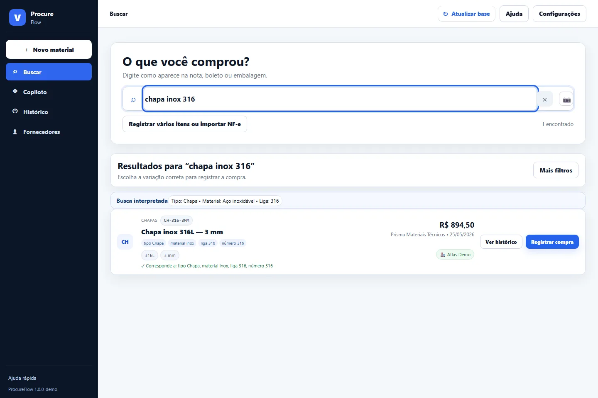

Context and problem
The shared spreadsheet made search, standardization, history and simultaneous editing difficult.
CASE / PROCUREFLOW
INTERNAL USEShared purchasing catalog
System used to record prices, find products and review purchasing history without silent overwrites between computers.

The shared spreadsheet made search, standardization, history and simultaneous editing difficult.
Modeling, FastAPI, search, revision control, backups, OCR, release and deployment.
Versioned JSON as a readable source, SQLite FTS5 as a derived index and optimistic revision control.
What this case does not show
At greater scale, the planned evolution is a central transactional database, identity and role-based authorization.
If the operation grew
Evolution depends on the state and limitations described in this case; it is not presented as an already delivered capability.
Public evidence contains no credentials, personal data or sensitive internal information.